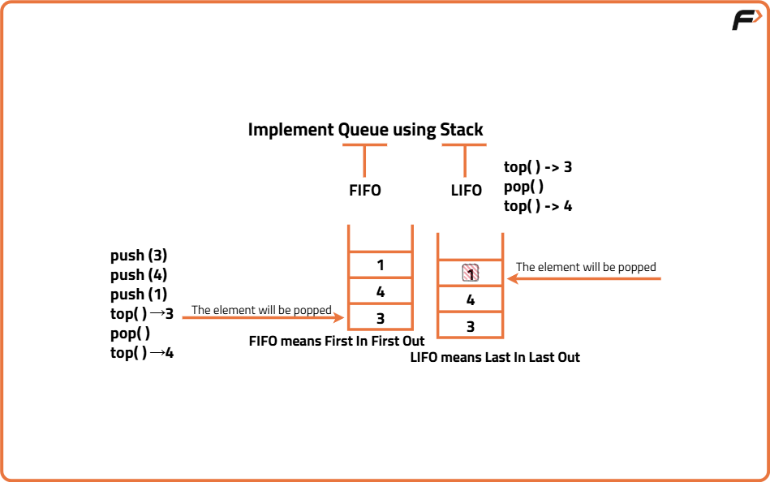
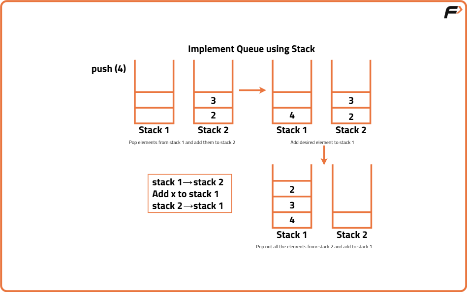
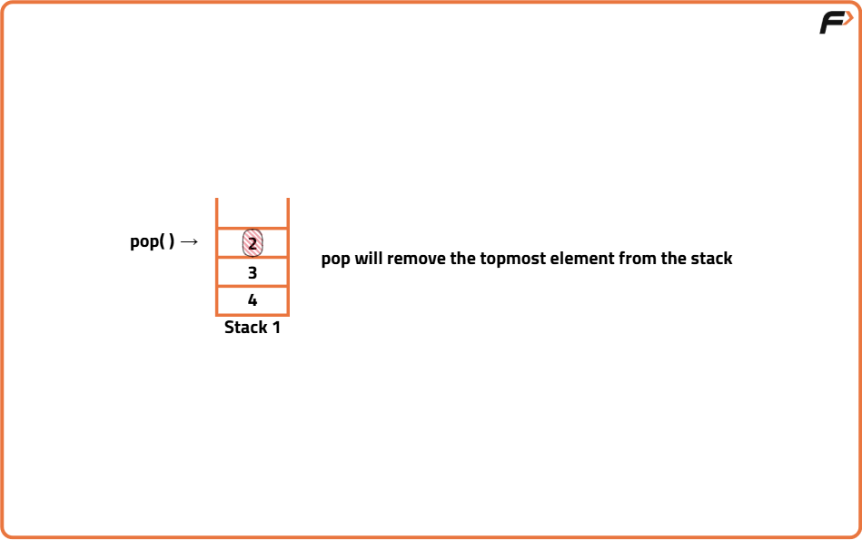
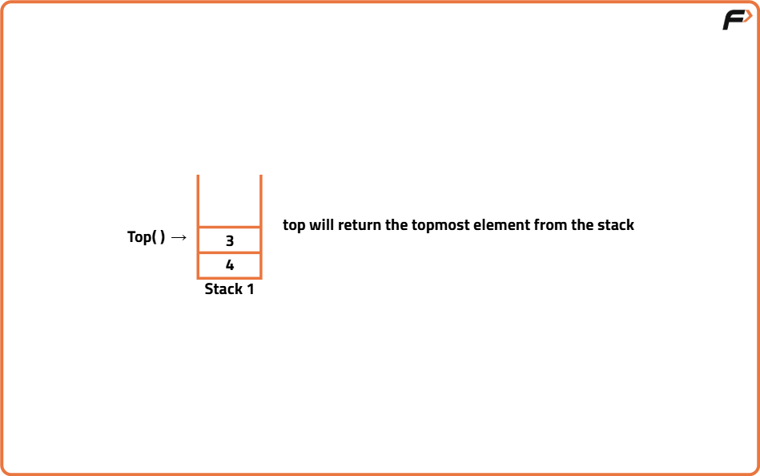
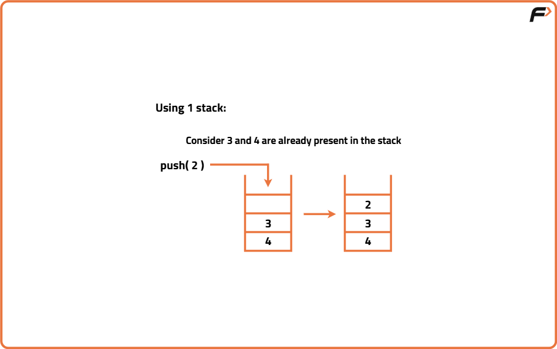
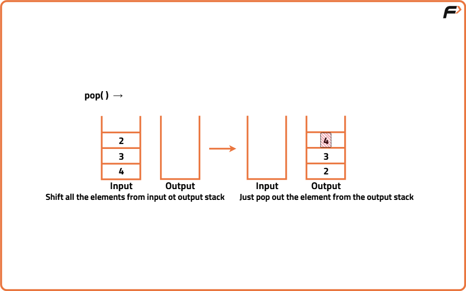
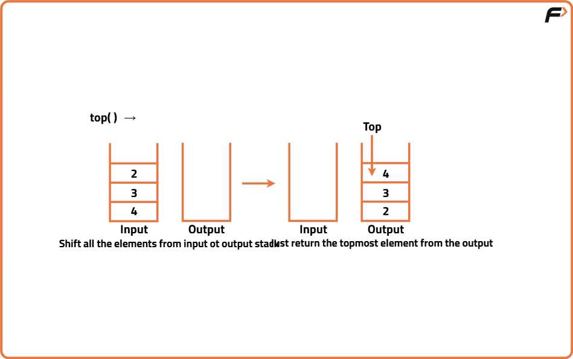
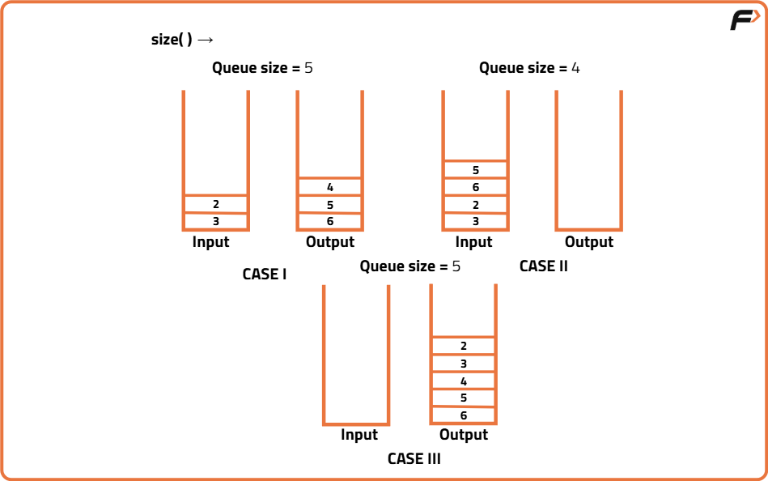

Implement Queue using Stack
Problem Statement:
Implement a First-In-First-Out (FIFO) queue using two stacks. The implemented queue should support the following operations: push, pop, peek, and isEmpty.
Implement the StackQueue class:
void push(int x): Adds element x to the end of the queue.
int pop(): Removes and returns the front element of the queue.
int peek(): Returns the front element of the queue without removing it.
boolean isEmpty(): Returns true if the queue is empty, false otherwise.
Examples
Example 1: Input: ["StackQueue", "push", "push", "pop", "peek", "isEmpty"] [[], [4], [8], [], [], []] Output: [null, null, null, 4, 8, false] Explanation: StackQueue queue = new StackQueue(); - queue.push(4); - queue.push(8); - queue.pop(); // returns 4 - queue.peek(); // returns 8 - queue.isEmpty(); // returns false Example 2: Input: ["StackQueue", "isEmpty"] [[]] Output: [null, true] Explanation: StackQueue queue = new StackQueue(); - queue.isEmpty(); // returns true
Disclaimer: Here is the practice link to help you assess your knowledge better. It's highly recommend trying to solve it before looking at the solution.
Using two Stacks where push operation is O(N)
Algorithm
- Use Two Stacks: Maintain two stacks,
stack1andstack2. - Push Operation:
- Transfer all elements from
stack1tostack2. - Add the new element to
stack1. - Transfer all elements back from
stack2tostack1. - This ensures the new element is always at the front for the next pop operation.
- Transfer all elements from
- Pop Operation: Remove and return the top element from
stack1. - Top Operation: Return the top element of
stack1without removing it. - Size Operation: Return the size of
stack1.




Code
#include <bits/stdc++.h>
using namespace std;
// Queue implementation using stack
class StackQueue {
private:
stack <int> st1, st2;
public:
// Empty Constructor
StackQueue () {
}
// Method to push elements in the queue
void push(int x) {
/* Pop out elements from the first stack
and push on top of the second stack */
while (!st1.empty()) {
st2.push(st1.top());
st1.pop();
}
// Insert the desired element
st1.push(x);
/* Pop out elements from the second stack
and push back on top of the first stack */
while (!st2.empty()) {
st1.push(st2.top());
st2.pop();
}
}
// Method to pop element from the queue
int pop() {
// Edge case
if (st1.empty()) {
cout << "Stack is empty";
return -1; // Representing empty stack
}
// Get the top element
int topElement = st1.top();
st1.pop(); // Perform the pop operation
return topElement; // Return the popped value
}
// Method to get the front element from the queue
int peek() {
// Edge case
if (st1.empty()) {
cout << "Stack is empty";
return -1; // Representing empty stack
}
// Return the top element
return st1.top();
}
// Method to find whether the queue is empty
bool isEmpty() {
return st1.empty();
}
};
int main() {
StackQueue q;
// List of commands
vector<string> commands = {"StackQueue", "push", "push",
"pop", "peek", "isEmpty"};
// List of inputs
vector<vector<int>> inputs = {{}, {4}, {8}, {}, {}, {}};
for (int i = 0; i < commands.size(); ++i) {
if (commands[i] == "push") {
q.push(inputs[i][0]);
cout << "null ";
} else if (commands[i] == "pop") {
cout << q.pop() << " ";
} else if (commands[i] == "peek") {
cout << q.peek() << " ";
} else if (commands[i] == "isEmpty") {
cout << (q.isEmpty() ? "true" : "false") << " ";
} else if (commands[i] == "StackQueue") {
cout << "null ";
}
}
return 0;
}Complexity Analysis
Time Complexity: O(n) for push operation, O(1) for pop and peek operations.
Space Complexity: O(n) for storing elements in the stacks.
Using Two Stacks Where Push Operation is O(1)
Algorithm
- Use Two Stacks: Maintain two stacks,
inputStackandoutputStack. - Push Operation:
- Add the element to
inputStack. This operation is efficient and always takes O(1) time.
- Add the element to
- Pop Operation:
- If the
outputStackis empty, move all elements frominputStacktooutputStack. This reversal of order ensures that the oldest element is on top of theoutputStack. - Remove and return the top element from
outputStack. This represents the oldest element in the queue.
- If the
- Top Operation:
- If the
outputStackis empty, move all elements frominputStacktooutputStackto access the oldest element. - Return the top element of
outputStackwithout removing it. This gives the element that has been in the queue the longest.
- If the
- Size Operation:
- Return the sum of the sizes of both stacks. This total gives the number of elements currently in the queue.




Code
#include <bits/stdc++.h>
using namespace std;
class StackQueue {
public:
stack<int> input, output;
// Initialize your data structure here
StackQueue() {}
// Push element x to the back of queue
void push(int x) {
input.push(x);
}
// Removes the element from in front of queue and returns that element
int pop() {
// Shift input to output if output is empty
if (output.empty()) {
while (!input.empty()) {
output.push(input.top());
input.pop();
}
}
// If queue is still empty, return -1 (or throw an error if preferred)
if (output.empty()) {
cout << "Queue is empty, cannot pop." << endl;
return -1;
}
int x = output.top();
output.pop();
return x;
}
// Get the front element
int peek() {
// Shift input to output if output is empty
if (output.empty()) {
while (!input.empty()) {
output.push(input.top());
input.pop();
}
}
// If queue is still empty, return -1 (or throw an error if preferred)
if (output.empty()) {
cout << "Queue is empty, cannot peek." << endl;
return -1;
}
return output.top();
}
// Returns true if the queue is empty, false otherwise
bool isEmpty() {
return input.empty() && output.empty();
}
};
int main() {
StackQueue q;
q.push(3);
q.push(4);
cout << "The element popped is " << q.pop() << endl;
q.push(5);
cout << "The front of the queue is " << q.peek() << endl;
cout << "Is the queue empty? " << (q.isEmpty() ? "Yes" : "No") << endl;
cout << "The element popped is " << q.pop() << endl;
cout << "The element popped is " << q.pop() << endl;
cout << "Is the queue empty? " << (q.isEmpty() ? "Yes" : "No") << endl;
return 0;
}
Complexity Analysis
Time Complexity: O(1) for push operation, O(n) for pop and peek operations in the worst case when elements need to be shifted.
Space Complexity: O(n) for storing elements in the two stacks.